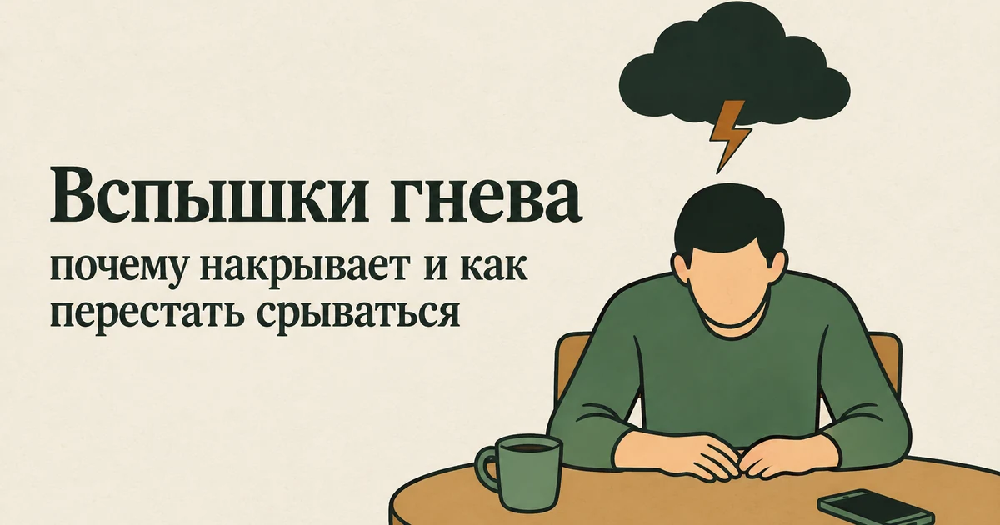
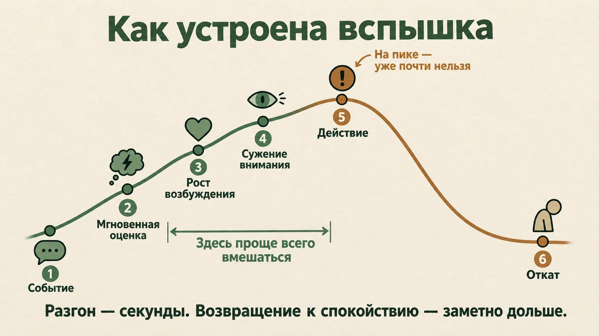
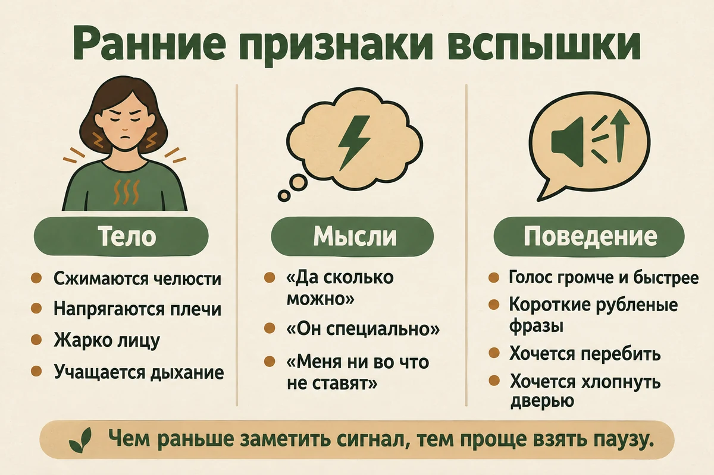
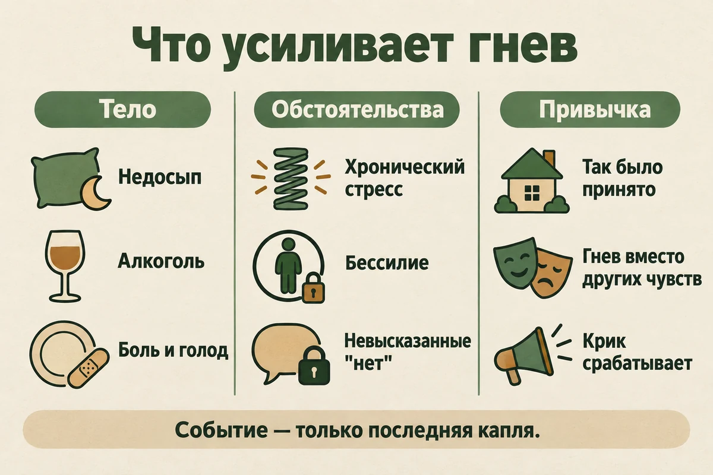
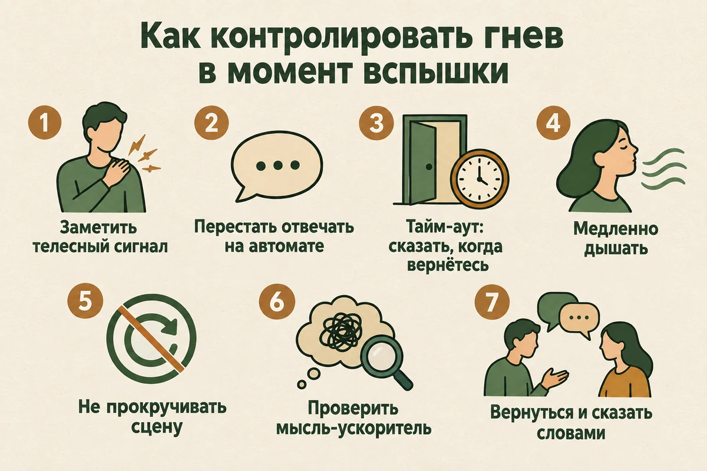
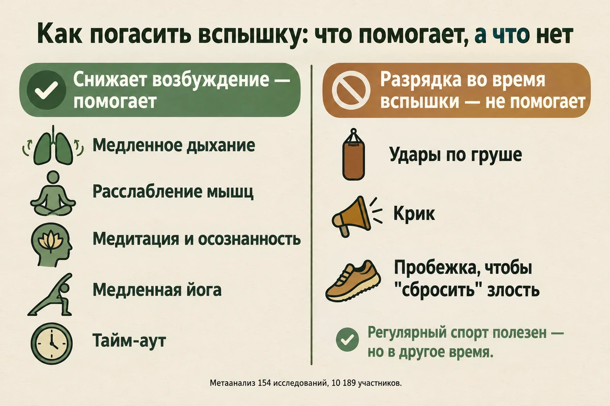
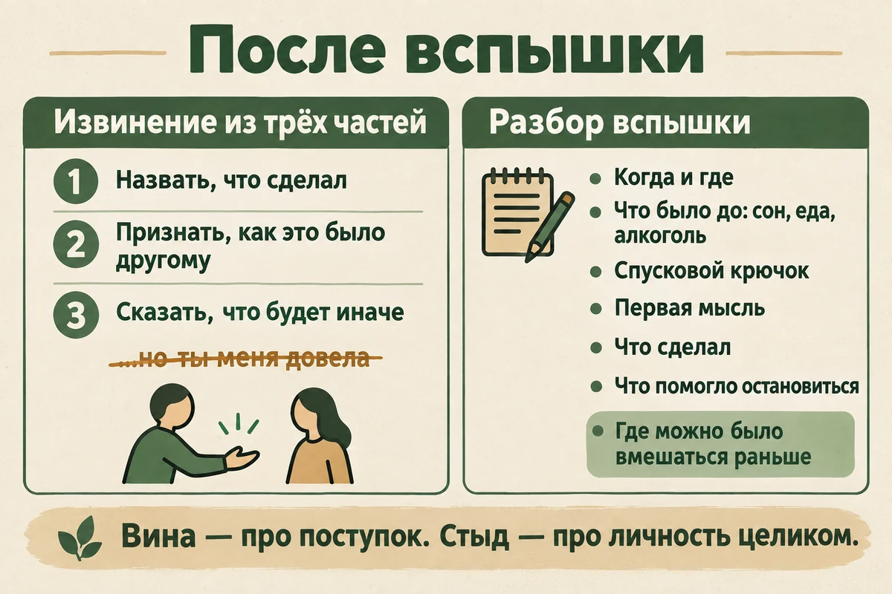

Главная → Блог → Вспышки гнева
Вспышки гнева: почему накрывает и как перестать срываться
Обновлено: 16.09.2026 · Источники проверены: 16.09.2026 · 20 минут чтения

Гнев — нормальная эмоция, и проблема почти никогда не в том, что человек злится. Проблема в том, что злость накрывает быстрее, чем получается подумать, выливается на тех, кто рядом, и оставляет после себя стыд. Важное здесь вот что: вспышка не мгновенная. У неё есть разгон, у разгона — заметные телесные признаки, и именно там её можно остановить. Ниже — как устроена вспышка, что её усиливает, что делать в первые минуты, почему «выпустить пар» не работает, как чинить отношения после срыва и когда вспышки оказываются симптомом депрессии, СДВГ, ПТСР или последствием алкоголя.
- Когда злость становится проблемой
- Как устроена вспышка
- Почему накрывает: что усиливает гнев
- Когда вспышки — симптом другого состояния
- Как контролировать гнев: 7 шагов в момент вспышки
- Почему «выпустить пар» не работает
- Что делать после срыва
- Как снизить фон надолго
- Если я срываюсь на ребёнке
- Когда это уже не гнев, а насилие
- Гнев и здоровье
- 7 ошибок, которые всё ухудшают
- Когда пора к специалисту
- Частые вопросы
Когда злость становится проблемой
Гнев — такая же базовая эмоция, как страх или радость, и у неё есть работа. Она включается, когда что-то оценивается как несправедливость, нарушение границ, угроза или бессилие, и даёт энергию, чтобы это изменить. При этом отсутствие заметных вспышек само по себе ещё не говорит о хорошей регуляции: злость можно выражать открыто, подавлять или разворачивать на себя. Важнее то, что происходит с ней дальше. NHS в материалах о гневе прямо называет частыми причинами ощущение несправедливого обращения и бессилия, чувство угрозы и неуважение.
Так что вопрос не в том, злиться или нет, а в том, что происходит дальше. Проблема начинается там, где злость сильнее повода, приходит быстрее, чем мысль, и оставляет после себя разрушения — в отношениях, в вещах, в самоощущении.
Присмотреться стоит, если вы узнаёте себя в нескольких пунктах:
- Реакция несоразмерна поводу. Разлитый чай или неудачная фраза вызывают ярость, как будто случилось что-то большое.
- Между «начал злиться» и «уже кричу» почти нет промежутка. Вы замечаете гнев, когда он уже на пике.
- После вспышки — стыд и ощущение «это был не я». Часто вместе с тем, что вы плохо помните, что именно говорили.
- Близкие подстраиваются. Дома проверяют ваше настроение, дети замирают, партнёр «не поднимает тему, чтобы не завелись».
- Есть последствия. Сломанные вещи, испорченные отношения, разговор с руководителем, разбитый в кровь кулак.
- Злость долго не отпускает. Вы часами прокручиваете разговор, придумываете, что надо было ответить, и заводитесь заново.
- Гасите её алкоголем — «чтобы отпустило» и «чтобы не сорваться».
Несколько совпадений — это не диагноз. Это повод разобраться, из чего складываются ваши вспышки: у них почти всегда есть узнаваемая механика и узнаваемое топливо.
Как устроена вспышка
Со стороны кажется, что человек «взорвался на ровном месте». Изнутри она чаще всего выглядит примерно так — только очень быстро.
- Событие. Фраза, взгляд, отказ, помеха, ошибка — своя или чужая.
- Мгновенная оценка. Не рассуждение, а вспышка смысла за доли секунды: «он специально», «меня не уважают», «сколько можно», «я не справляюсь». Именно оценка, а не само событие, запускает гнев: одна и та же реплика от начальника и от друга злит по-разному.
- Скачок возбуждения. Учащается пульс, поднимается давление, напрягаются челюсть и плечи, приливает жар к лицу, сжимаются кулаки, голос становится громче и ниже.
- Сужение внимания. Из поля зрения выпадает всё, что не связано с угрозой: контекст, последствия, чувства другого, собственные планы на вечер. Именно поэтому на пике люди говорят то, чего не думают.
- Действие. Крик, резкая фраза, хлопок дверью, удар по столу.
- Откат. Возбуждение спадает, возвращается контекст — и приходят опустошение, стыд и вина.
Главная особенность этой механики в асимметрии: возбуждение поднимается за секунды, а обратно возвращается заметно медленнее. Даже когда спор уже прекращён, телу нужно время, чтобы вернуться в исходное состояние, и сколько именно — у разных людей по-разному. Отсюда практический вывод, который экономит много ссор: сразу после пика «поговорить спокойно» обычно не получается — тело ещё разогнано, и любая мелочь снова поднимает волну. Сначала пауза, потом разговор.

Ранние признаки: как поймать разгон
Второй вывод — про окно вмешательства. Остановить вспышку на пике почти невозможно, а вот на разгоне — реально, и для этого нужно знать свои ранние признаки. Обычно они бывают трёх видов, и полезно выписать свои, пока вы спокойны.
- Тело: сжимаются челюсти, напрягаются плечи, холодеют или немеют руки, становится жарко лицу, учащается дыхание.
- Мысли: «да сколько можно», «он специально», «это уже наглость», «меня ни во что не ставят», «ну всё».
- Поведение: речь ускоряется и становится громче, фразы делаются короткими и рублеными, хочется перебить, хлопнуть дверью, выйти из разговора.

Почему накрывает: что усиливает гнев
Вспышка редко объясняется одним событием. Гораздо чаще событие оказывается последней каплей, а всё остальное — фон, который давно поднимал готовность взорваться. Фон бывает трёх видов: тело, обстоятельства и привычка.
Тело: недосып, алкоголь, боль
- Недосып. Это самый недооценённый усилитель. В эксперименте 2019 года 142 человека были случайным образом распределены: одни спали как обычно, другим сон ограничили на два дня. У недосыпавших злость на неприятный шум была заметно сильнее — и, что важнее, у них пропала способность привыкать к раздражителю: обычно человек постепенно перестаёт реагировать, а при нехватке сна раздражение не угасало. Если вы систематически спите по пять часов, вы злитесь не потому, что стали хуже, — сон держит вашу способность выдерживать.
- Алкоголь. Связь не «мифологическая», а показанная в экспериментах. В лабораторном исследовании 187 человек получали одну из шести доз алкоголя: чем выше доза, тем выше была агрессия в задании, причём одинаково у мужчин и женщин. К этому добавляется отложенный эффект: вечерняя доза ухудшает сон, а завтрашний недосып снова снижает порог. Подробнее — в статье «Алкоголь и тревога».
- Боль, голод, болезнь, переутомление. Любое состояние, в котором организм и так тратит ресурс на то, чтобы держаться, оставляет меньше ресурса на самоконтроль.
- Медицинские причины. Резко изменившаяся раздражительность бывает связана с гормональными нарушениями, неврологическими состояниями, последствиями травмы головы, действием или отменой лекарств. Это оценивает врач, а не статья в интернете, — но если характер изменился за недели без понятной причины, к врачу стоит сходить.
Обстоятельства: стресс, бессилие, накопленное
- Хронический стресс и выгорание. При истощении раздражительность — один из первых признаков: сил на «переварить» не остаётся, и всё идёт через короткое замыкание. То же самое делает затяжной стресс на работе.
- Бессилие и несправедливость. Злость особенно сильна там, где вы не можете ничего изменить: очередь, бюрократия, начальник, который не слышит. Энергия есть, применить её некуда — и она выливается дома.
- Невысказанные «нет». Человек, который годами соглашается, когда хочет отказать, копит счёт. Потом счёт предъявляется разом и не тому — обычно самому безопасному человеку. Если вы часто соглашаетесь, хотя хотите отказать, стоит отдельно разобрать личные границы и навык говорить «нет».
- Перегруз без пауз. День без единого промежутка, когда никто ничего не хочет, — это день с нулевым запасом терпения к вечеру.
Опыт и привычка
- Так было принято. Если в родительской семье крик был обычным способом решать вопросы, он усваивается как норма и воспроизводится автоматически — особенно в стрессе. Как ранний опыт продолжает влиять на взрослые реакции, разбираем в статье о детских травмах.
- Гнев как единственная разрешённая эмоция. Если грустить и бояться в семье было «слабостью», злость остаётся единственным способом обозначить, что что-то не так. Тогда под вспышкой почти всегда прячется что-то ещё: страх, стыд, обида, беспомощность.
- Подкрепление. Крик работает быстро: разговор прекращается, требование выполняется. Мозг запоминает, что это эффективно, — и предлагает тот же способ в следующий раз, хотя долгосрочная цена растёт.

Когда вспышки гнева — симптом другого состояния
Иногда раздражительность — не про характер и не про усталость, а часть другого состояния. Это важно проверить, потому что работать тогда нужно не только с гневом. Ниже не тест на диагноз, а подсказка, на что ещё обратить внимание: одна и та же раздражительность встречается при очень разных состояниях, а сочетания бывают чаще, чем «чистые» случаи.
| На что ещё обратить внимание | Что с этим делать | |
|---|---|---|
| Депрессия | Раздражительность вместо грусти, ничего не радует, нет сил, всё раздражает неделями. Так называемые «приступы гнева» — внезапные вспышки с сердцебиением и ощущением потери контроля — описаны примерно у трети пациентов с депрессией | Оценка у врача; как выглядит депрессия, самопроверка — шкала PHQ-9 |
| Выгорание | Цинизм, отстранённость, «меня всё бесит» именно в связи с работой, силы не восстанавливаются в выходные | Разбор выгорания и тест на выгорание |
| СДВГ | Вспышка вспыхивает мгновенно и так же быстро гаснет, эмоции «на поверхности» всю жизнь, вместе с трудностями концентрации и импульсивностью | СДВГ у взрослых, скрининг — шкала ASRS |
| ПТСР | Гипервозбуждение, вздрагивание, настороженность, вспышки на резкий звук или прикосновение после тяжёлых событий | Признаки ПТСР и шкала PCL-5 |
| Тревога | Постоянное напряжение и ожидание плохого, раздражение как побочный продукт вечной мобилизации | Гид по тревоге, шкала GAD-7 |
| Алкоголь | Вспышки чаще после употребления или на следующий день, раздражительность нарастает в дни без выпивки | Алкоголь и тревога, тест AUDIT |
| Интермиттирующее эксплозивное расстройство | Повторяющиеся вспышки агрессии, явно несоразмерные поводу, с ущербом для отношений, работы или имущества, не объяснимые другим расстройством | Только очная оценка специалиста |
| Соматика и неврология | Раздражительность появилась недавно и резко, есть головные боли, провалы памяти, спутанность, изменения речи, недавняя травма головы или новые лекарства | Сначала врач, а не психолог |
Поставить диагноз может только специалист на очной оценке — по одному признаку и тем более по таблице этого не делают.
Что такое интермиттирующее эксплозивное расстройство
Это диагноз для случаев, когда вспышки — не эпизоды на фоне трудного периода, а устойчивый повторяющийся паттерн. В МКБ-11 оно описано как повторяющиеся короткие эпизоды словесной или физической агрессии либо порчи имущества, которые отражают неспособность справиться с агрессивным импульсом и по силе явно не соответствуют поводу, при этом мешают жить и не объясняются другим расстройством.
Оно встречается чаще, чем принято думать. В американском национальном исследовании 9282 взрослых, опубликованном в 2006 году (данные собирались в 2001–2003 годах), диагноз хотя бы раз в жизни соответствовал 7,3% участников, а за последний год — 3,9%. Средний возраст начала — 14 лет. Самая показательная цифра другая: большинство таких людей когда-либо обращались за помощью по поводу эмоциональных проблем или зависимости, но лечение именно по поводу гнева получали лишь 28,8%. То есть о злости чаще всего просто не говорят — ни врачу, ни психологу.
Методы помощи при этом есть. В обзоре с метаанализом 2025 года, куда вошли 12 рандомизированных исследований и 14 описаний случаев, психологические методы — в первую очередь когнитивно-поведенческие — снижали агрессию заметнее, чем лекарственные; в рандомизированном исследовании 44 человек с этим диагнозом многокомпонентная КПТ оказалась эффективнее поддерживающей психотерапии. Авторы обзора подчёркивают, что доказательная база здесь пока скромнее, чем у более изученных расстройств, — но «ничего сделать нельзя» это точно не тот случай.
Как контролировать гнев в момент вспышки: 7 шагов
Это план для ситуации, когда уже начало подниматься. Он не про «взять себя в руки» силой воли: на пике воли обычно не хватает ни у кого. Он про то, чтобы поймать раньше и снизить обороты.
- Поймать телесный сигнал. Зубы, кулаки, жар в лице, участившееся дыхание. Это ваш личный звонок будильника — у каждого он свой, и его стоит один раз выписать себе на бумаге, пока вы спокойны.
- Перестать отвечать на автомате. Не «успокоиться», а просто замолчать на несколько секунд. Большая часть непоправимого произносится сразу, когда внимание уже сузилось, а пауза возвращает возможность выбрать слова.
- Взять тайм-аут по правилам. Тайм-аут — это не уход в молчание и не наказание. Он работает, когда вы говорите вслух три вещи: что вам надо остыть, что вы вернётесь, и когда именно («мне надо двадцать минут, я вернусь и мы договорим»). Уйти, хлопнув дверью, — это не тайм-аут, а часть ссоры; и тайм-аут не должен превращаться в молчаливое наказание, исчезновение на сутки или угрозу расставанием. Если обещали вернуться к разговору — по возможности вернитесь, иначе в следующий раз пауза не будет работать.
- Снизить возбуждение телом. Несколько минут медленного дыхания — например, сделать выдох немного длиннее вдоха, если так комфортно. Расслабить плечи, челюсть, кисти. Умыться прохладной водой. Именно занятия, которые снижают возбуждение, показали эффект в исследованиях — об этом ниже.
- Не прокручивать сцену. Мысленные повторы «а он мне, а я ему» держат возбуждение на высоте и продлевают злость. Если мысли возвращаются, помогает переключение на что-то, что требует внимания: разобрать посуду, пройтись, посчитать шаги.
- Проверить мысль-ускоритель. Найдите фразу, которая разгоняет: «он специально», «меня ни во что не ставят», «всегда одно и то же». Проверьте её на факты и переформулируйте в описание: «он опоздал на сорок минут и не предупредил». Обвинение в намерении разгоняет гнев сильнее, чем сам факт.
- Вернуться и сказать словами. Когда отпустило — договорить по формуле «факт — чувство — просьба»: «ты не позвонил, я разозлился и испугался, я прошу писать, если задерживаешься». Это и есть выражение гнева, только в той форме, после которой не надо извиняться.
Если рядом ребёнок или вы за рулём, первый шаг один: обеспечить безопасность. Остановиться, отойти, передать ребёнка другому взрослому — и только потом разбираться с собой.

Иногда нужно просто выговориться сразу после вспышки — когда стыдно, а звонить кому-то из близких не хочется. Это можно сделать анонимно и в любое время суток, чтобы разложить произошедшее на «что случилось, что я почувствовал, что теперь сказать». Это не заменяет работу со специалистом, но помогает не остаться наедине с собой в худший момент.
Поговорить о том, что произошлоПочему «выпустить пар» не работает
Идея, что гнев надо «выпустить» — побить грушу, покричать в подушку, поразбивать тарелки в специальной комнате, — звучит логично и держится на образе пара в котле. Проверка этого образа дала обратный результат.
В метаанализе 2024 года, объединившем 154 исследования и 10 189 участников, сравнили два типа занятий. Те, что снижают возбуждение — глубокое дыхание, релаксация, прогрессивная мышечная релаксация, медитация и практики осознанности, медленная йога, тайм-аут, — уменьшали и гнев, и агрессию, причём устойчиво: у мужчин и женщин, у студентов и не студентов, в группе и индивидуально, у людей с судимостью и без. Те, что повышают возбуждение — удары по груше, крик, бег, велотренажёр, — не дали эффекта вообще: средний результат оказался нулевым.
Практический вывод: гасить конкретную вспышку нужно понижением оборотов, а не разрядкой. Важно прочитать это точно: речь именно о попытке погасить уже вспыхнувшую злость. Это не значит, что спорт бесполезен — регулярная физическая нагрузка хорошо влияет на общий фон, сон и стресс, и NHS рекомендует её среди способов справляться с гневом. Просто работает она в другое время: не «вместо срыва», а вне конфликта.
И ещё одно важное уточнение, чтобы не впасть в противоположную крайность. «Не разряжаться действием» — не то же самое, что «давить в себе». Проглоченная злость никуда не девается: она копится и выходит либо телом, либо всё той же вспышкой, только позже и сильнее. Разница между выражением и разрядкой простая: выражение — это сказать словами, кому и что не так; разрядка — это ударить, накричать или разбить.

Что делать после срыва
После вспышки обычно происходит одно из двух: человек проваливается в самобичевание («я чудовище») или делает вид, что ничего особенного не было. Оба варианта повышают вероятность следующего срыва. Первый — потому что стыд истощает и требует обезболивания, второй — потому что ничего не меняется.
Починить контакт, а не замять
Рабочее извинение состоит из трёх частей и не содержит четвёртой — оправдания.
- Назвать, что именно вы сделали. «Я накричал и швырнул телефон» — а не «прости за вчерашнее».
- Признать, как это было для другого. «Тебе было страшно и обидно» — без спора о том, должно ли было быть.
- Сказать, что вы будете делать иначе. «Когда я начну заводиться, я буду говорить, что мне нужно двадцать минут».
Чего делать не стоит: добавлять «но ты же меня довела», требовать немедленного прощения и превращать извинение в разговор о том, как вам плохо. Сама тема, из-за которой начался конфликт, тоже никуда не делась — но обсуждать её лучше отдельно и позже, а не в том же разговоре.
Разобрать вспышку, пока помните
Самый практичный инструмент — короткий дневник вспышек. Он нужен не для того, чтобы собирать на себя компромат, а чтобы увидеть повторяющийся узор. По каждому эпизоду фиксируйте шесть пунктов:
- когда и где это произошло;
- что было за несколько часов до: сколько спали, ели ли, был ли алкоголь, какой был день;
- что стало спусковым крючком — конкретное действие или фраза;
- какая мысль пронеслась первой;
- что вы сделали и что сказали;
- что помогло остановиться и что помешало;
- на каком звене цепочки можно было вмешаться раньше.
Через несколько недель регулярных записей закономерности обычно начинают проступать сами: вспышки липнут к определённому времени суток, к недосыпу, к одному и тому же человеку или к одной теме. С этим уже можно работать: изменить обстоятельства, договориться заранее, подготовить фразу.
Вина — да, стыд — нет
Разница не в словах. Вина — это «я сделал плохо», она указывает на поступок и подталкивает к исправлению. Стыд — это «я плохой», он говорит о вас целиком и обычно ведёт либо к оправданиям, либо к новой злости, потому что выносить его невозможно. Если после срывов вы застреваете именно в стыде, это стоит обсудить со специалистом — само по себе оно не рассасывается. Разбор того, чем вина отличается от стыда и что с этим делать, — в статье «Постоянное чувство вины»; прицельно с самокритикой работает терапия, сфокусированная на сострадании.

Как снизить фон надолго
Приёмы «в моменте» помогают не сорваться, но не уменьшают число ситуаций, в которых вас накрывает. Для этого нужно работать с фоном.
- Сон в первую очередь. Это не общее место: недосып напрямую усиливает злость и лишает способности привыкать к раздражителям. Если проблема в засыпании из-за прокручивания дня, поможет статья о бессоннице при тревоге.
- Пересмотреть алкоголь. Хотя бы эксперимент на месяц: он влияет и напрямую, и через испорченный сон, так что связь видна только когда его нет.
- Регулярная нагрузка и паузы. Не как способ разрядки в момент злости, а как фон: движение, прогулки, промежутки в дне, когда от вас никому ничего не нужно.
- Учиться злиться вовремя. Большинство «внезапных» вспышек — это накопленные невысказанные мелочи. Сказанное спокойно и сразу «мне не нравится, когда так делают» снимает необходимость взрываться через месяц. Основа этого навыка — личные границы.
- Искать потребность под злостью. Гнев часто связан с потребностью, которую человек воспринимает как нарушенную: в уважении, отдыхе, безопасности, справедливости, автономии. Названная потребность превращает нападение в просьбу, на которую можно ответить.
- Тренировать внимание к раннему сигналу. Практики осознанности в исследованиях относятся как раз к тем занятиям, которые снижают возбуждение и гнев; заодно они тренируют главное умение — замечать реакцию раньше пика. Как это устроено — в разборе mindfulness.
Что делает психотерапия
Гнев — не та проблема, о которой обязательно нужно справляться в одиночку, и он хорошо поддаётся работе. В обзоре метаанализов психосоциальных методов лечения гнева и агрессии когнитивно-поведенческие методы оказались самыми изученными и стабильно показывали как минимум умеренную эффективность — и у людей без психиатрических диагнозов, и у пациентов клиник. С агрессией как поведением результаты менее однородны, но со злостью как состоянием методы работают.
На практике в когнитивно-поведенческой терапии при вспышках занимаются довольно конкретными вещами: учатся замечать ранние признаки, осваивают релаксацию, разбирают мысли-ускорители («он сделал это назло»), тренируют навыки прямого разговора и заранее репетируют сложные ситуации. Если за гневом стоят давние сценарии из детства, работают глубже — этим занимается схема-терапия. А если главная трудность в том, чтобы не действовать под влиянием сильного чувства, стоит посмотреть на ACT: в нём отдельное внимание уделяют тому, чтобы выдерживать сильные эмоции и выбирать поступок по своим ценностям, а не только под влиянием импульса. Прямых сравнений с КПТ именно при вспышках гнева меньше, так что это выбор по удобству подхода, а не по силе доказательств.
Если я срываюсь на ребёнке
Это самый частый и самый тяжёлый вариант запроса: на работе держусь, а дома кричу на того, кто меньше всех может ответить. Здесь важно и не заниматься самоуспокоением, и не утонуть в вине.
Факты, на которые стоит опереться. Крик, оскорбления и унизительные прозвища — не «строгое воспитание», а то, что в исследованиях называют вербальным насилием. В систематическом обзоре 2023 года, обобщившем 166 исследований — 149 количественных и 17 качественных, — авторы приводят связи вербального насилия в детстве с депрессией, гневом, агрессией, поведенческими проблемами и употреблением психоактивных веществ в дальнейшем и предлагают признать его отдельным видом жестокого обращения, чтобы им целенаправленно занимались. Это не значит, что один сорвавшийся вечер ломает ребёнка. Это значит, что регулярный крик — не нейтральная вещь, и на него стоит смотреть как на то, что требует изменений, а не как на неизбежность.
Что помогает на практике:
- Снизить требования момента. Большинство срывов случается не на «плохом поведении», а на совпадении: вечер, усталость, спешка, голод — и ребёнок, который в этот момент делает то, что делают дети.
- Дать себе две минуты. Убедиться, что ребёнок в безопасности, и выйти в другую комнату — это не «бросить», это лучший из доступных вариантов на пике.
- Говорить о поведении, а не о личности. «Так делать нельзя, это опасно» вместо «ты невыносимый».
- Чинить контакт вслух. Ребёнку нужно услышать, что произошло, что причина была во взрослом, и что он не виноват: «я накричала, мне надо было остановиться раньше, ты в этом не виноват».
- Не требовать от ребёнка утешения. Он не должен успокаивать взрослого и говорить «всё нормально».
Если срывы повторяются, стоит обратиться за помощью — это не признание себя плохим родителем, а способ разорвать цикл, который иначе передаётся дальше. По темам рядом: «Подростковая депрессия» и «Ребёнок не хочет в школу».
Когда это уже не гнев, а насилие
Эту границу лучше проговорить прямо, без смягчений. Удары, толчки, замахи, швыряние предметов в человека, удержание силой, угрозы расправы, порча вещей для запугивания, преследование — это уже не эмоция, а поведение, и называется оно насилием. Сильный гнев действительно сужает набор доступных в моменте действий — и всё же он не делает насилие неизбежным и не снимает ответственности за него. Злость объясняет, что человек чувствовал, но не оправдывает того, что он сделал.
Это не редкость. По данным ВОЗ, примерно каждая третья женщина в мире хотя бы раз подвергалась физическому или сексуальному насилию со стороны партнёра либо сексуальному насилию со стороны другого человека.
Если вы тот, кто пострадал. Ваша задача — безопасность, а не понимание причин чужого гнева. Объяснения вроде «он не сдержался» и «я сама довела» не делают происходящее нормальным, а обещания «больше не повторится» без реальных изменений обычно не выполняются. Куда обращаться, включая бесплатные и круглосуточные варианты, — в справочнике помощи; при непосредственной угрозе — 112. О том, как устроены отношения, в которых это становится нормой, — «Токсичные отношения».
Если вы тот, кто срывается. Признать это трудно, но именно с этого начинается изменение. Важно понимать три вещи: это не «характер, который не переделать»; одной силой воли такие эпизоды обычно не прекращаются; помощь существует и работает. До первой консультации минимальная задача — снизить риск: не оставаться в ситуации на пике, убрать алкоголь, заранее договориться о тайм-ауте.
Гнев и здоровье
Пугать здесь нечем и незачем, но одну вещь знать полезно. В метаанализе 2014 года в European Heart Journal сведены исследования, в которых сердечно-сосудистые события сопоставляли со вспышками гнева: в течение двух часов после вспышки риск инфаркта оказался примерно в 4,7 раза выше, чем в спокойные периоды (доверительный интервал 2,5–9,0). Оценку по инсульту авторы приводят с оговоркой: исследования слишком разнородны, и доверительный интервал там от 0,8 до 16 — то есть надёжного вывода она не даёт.
Читать это нужно правильно. Речь о временном скачке относительного риска, а не о том, что каждая ссора опасна для жизни: у человека без сердечно-сосудистых проблем абсолютная вероятность события в конкретные два часа остаётся очень низкой, и сами авторы пишут, что практическое значение растёт там, где вспышки частые и где исходный риск уже повышен. Вывод не «злиться нельзя», а «частые вспышки — это нагрузка, и она не только психологическая».
7 ошибок, которые всё ухудшают
- Копить и молчать о проблеме. Невысказанное раздражение поддерживает напряжение и часто выливается в более крупный конфликт позже — и обычно не с тем, к кому оно относится.
- Выяснять отношения на пике. Пока возбуждение высокое, внимание сужено — договориться в этот момент невозможно, зато можно сказать непоправимое.
- «Выпускать пар» через грушу, крик или пробежку. Как способ погасить уже вспыхнувшую злость это в исследованиях не работает; помогают занятия, которые понижают возбуждение. Регулярная нагрузка при этом полезна — просто в другое время.
- Гасить злость алкоголем. Он не успокаивает, а снижает порог: чем выше доза, тем выше агрессия, плюс испорченный сон и худший следующий день.
- Извиняться с «но». Фраза после «но» легко превращает извинение в оправдание или встречное обвинение.
- Считать, что «я просто такой человек». Темперамент действительно разный, но реакции на злость — это навык, а навыки тренируются.
- Ставить себе диагноз по интернету. Найти у себя «эксплозивное расстройство» по описанию легко; отличить его от депрессии, ПТСР, СДВГ или последствий алкоголя может только специалист.
Когда пора к специалисту
Есть ситуации, где самопомощь неуместна как основной инструмент. Обратиться стоит, если:
- дело доходило до физических действий — по отношению к людям или к вещам;
- вы боитесь себя или близкие боятся вас;
- вспышки становятся чаще или сильнее;
- из-за злости страдают работа, отношения, родительство;
- вы плохо помните, что говорили и делали на пике;
- гнев сопровождается алкоголем или другими веществами;
- раздражительность появилась резко, вместе с головными болями, спутанностью, изменениями памяти или речи, после травмы головы или смены лекарств — здесь первым идёт врач;
- есть мысли о причинении вреда себе — это повод за помощью не откладывая.
С чего начать: с психолога или психотерапевта, работающего в когнитивно-поведенческом подходе. Если есть подозрение на депрессию, ПТСР, СДВГ или зависимость, нужна оценка психиатра — он же может назначить лечение основного состояния, после которого вспышки часто уменьшаются сами. Бесплатные и недорогие варианты, включая службы, работающие круглосуточно, собраны в справочнике бесплатной психологической помощи.
И главное, ради чего всё это. Задача не в том, чтобы перестать злиться или «взять себя в руки» раз и навсегда. Задача — раньше замечать разгон, снижать обороты и выбирать действие, которое не разрушает ни вас, ни отношения. Если самостоятельно это не выходит и вспышки повторяются, обращение за помощью — нормальный следующий шаг, а не признание слабости.
Частые вопросы
Почему я срываюсь на близких, а на работе сдерживаюсь?
Потому что цена срыва разная. На работе сдерживаться помогают последствия, роль и то, что отношения там формальные, — а дома человек расслабляется, устал за день и уверен, что его не бросят. Плюс именно дома копятся мелкие обиды и невысказанные «нет», которые днём было некогда обсудить. Это не значит, что вы лицемерите: самоконтроль — ресурс, который к вечеру заканчивается.
Как быстро успокоиться во время вспышки гнева?
Работают действия, которые снижают возбуждение: медленное дыхание с выдохом длиннее вдоха в течение двух-трёх минут, расслабление мышц, прохладная вода, короткий тайм-аут с предупреждением «я вернусь через двадцать минут». Важно не продолжать разговор на пике и не прокручивать сцену в голове — прокручивание продлевает злость. Возбуждение нарастает за секунды, а спадает заметно дольше, поэтому возвращаться к разговору лучше не сразу.
Помогает ли бить подушку или грушу, чтобы выпустить гнев?
Нет. В метаанализе 154 исследований с участием более 10 тысяч человек занятия, которые повышают возбуждение, — удары по груше, крик, бег — в среднем не снижали гнев вообще, а снижали его занятия, которые возбуждение уменьшают: дыхание, релаксация, медитация, осознанность, медленная йога, тайм-аут. Регулярный спорт полезен для общего фона, но как способ погасить конкретную вспышку он не работает.
Вспышки гнева — это болезнь?
Сам по себе гнев — нормальная эмоция, а не расстройство. Но повторяющиеся вспышки, несоразмерные поводу, с агрессией или порчей вещей и с заметными последствиями для жизни, описаны в классификациях как интермиттирующее эксплозивное расстройство. Кроме того, вспышки часто бывают проявлением депрессии, СДВГ, ПТСР, тревоги или последствий алкоголя. Понять, что именно происходит, можно только со специалистом — по одному признаку диагноз не ставят.
Что делать, если я сорвался на ребёнке?
Сначала остановиться и восстановить безопасность, потом починить контакт. Ребёнку важно услышать три вещи: что произошло («я накричала»), что это было про взрослого, а не про него («ты в этом не виноват»), и что вы собираетесь делать иначе. Не нужно требовать, чтобы он сразу успокоил вас или сказал «всё нормально». Если срывы повторяются, это повод обратиться за помощью — не потому, что вы плохой родитель, а потому, что одной силой воли это обычно не решается.
Почему я злюсь без причины?
Чаще всего причина есть, просто она не в том эпизоде, который стал спусковым крючком. Гнев усиливают недосып, боль, голод, алкоголь, хронический стресс и накопленные невысказанные претензии — на таком фоне вспышку вызывает мелочь. Отдельно стоит проверить, нет ли за постоянной раздражительностью депрессии, тревоги, выгорания или СДВГ: при них злость становится фоном, а не реакцией на событие.
Как перестать злиться на человека, который поступил несправедливо?
Полностью «отключить» злость на несправедливость нельзя, да и не нужно: это нормальная реакция. Помогает другое — отделить факт от домысла о намерении, решить, что вы можете сделать по существу: сказать, попросить, изменить договорённость, прекратить общение, — и сделать это словами, а не в приступе. Если сделать нельзя ничего, злость обычно держится дольше, и тогда работа идёт не с обидчиком, а с тем, как вы проживаете бессилие.
К какому специалисту идти с приступами злости?
Начать можно с психолога или психотерапевта, работающего в когнитивно-поведенческом подходе: именно эти методы изучены при проблемах с гневом лучше всего. К психиатру стоит идти, если есть подозрение на депрессию, ПТСР, СДВГ или зависимость, а также если вспышки сопровождаются провалами памяти, спутанностью или начались после травмы головы или смены лекарств. Если ситуация уже дошла до физических действий или вы боитесь себя, помощь нужна не откладывая.
Как подготовлен материал. Текст подготовлен редакцией AI Therapist. Мы опираемся на материалы NHS и ВОЗ, описания расстройств в МКБ-11 и рецензируемые исследования; цифры приводим по первоисточникам, ссылки стоят прямо в тексте. Самопомощь отделяем от лечения, а тему насилия описываем прямо: гнев объясняет чувство, но не оправдывает действие. Диагностических шкал по гневу на странице не воспроизводим. Статья носит просветительский характер, не является медицинской рекомендацией и не заменяет консультацию специалиста — диагноз ставит и лечение назначает врач.
Источники: NHS — Anger, ВОЗ — Violence against women, МКБ-11, раздел расстройств контроля импульсов (6C73, интермиттирующее эксплозивное расстройство), Kjærvik S. L., Bushman B. J. «A meta-analytic review of anger management activities that increase or decrease arousal», Clinical Psychology Review, 2024, Krizan Z., Hisler G. «Sleepy anger: Restricted sleep amplifies angry feelings», Journal of Experimental Psychology: General, 2019, Duke A. A. et al. «Alcohol dose and aggression», Journal of Studies on Alcohol and Drugs, 2011, Kessler R. C. et al. «The prevalence and correlates of DSM-IV intermittent explosive disorder in the National Comorbidity Survey Replication», Archives of General Psychiatry, 2006, Fava M. «Anger attacks in depression», Depression and Anxiety, 1998, Lee A. H., DiGiuseppe R. «Anger and aggression treatments: a review of meta-analyses», Current Opinion in Psychology, 2018, Liu F., Yin X., Jiang W. «Comprehensive Review and Meta-Analysis of Psychological and Pharmacological Treatment for Intermittent Explosive Disorder», Clinical Psychology & Psychotherapy, 2025, McCloskey M. S. et al. «Cognitive-Behavioral Versus Supportive Psychotherapy for Intermittent Explosive Disorder: A Randomized Controlled Trial», Behavior Therapy, 2022, Dube S. R. et al. «Childhood verbal abuse as a child maltreatment subtype: A systematic review of the current evidence», Child Abuse & Neglect, 2023, Mostofsky E. et al. «Outbursts of anger as a trigger of acute cardiovascular events: a systematic review and meta-analysis», European Heart Journal, 2014. Источники проверены 16.09.2026.
Кто отвечает за содержание сайта и по каким правилам мы готовим материалы — на странице о проекте.
Читать также
- Личные границы: как их выстроить и перестать всё терпеть — чтобы не копить до взрыва.
- Эмоциональное выгорание: 12 признаков и что делать — если раздражает уже всё и постоянно.
- СДВГ у взрослых: симптомы, признаки, диагноз и лечение — если вспышки мгновенные и так всю жизнь.
- ПТСР: 12 признаков, почему возникает и как его лечат — если злость появилась после тяжёлых событий.
- Постоянное чувство вины: 7 шагов, чтобы перестать себя грызть — если после срывов вы застреваете в самобичевании.
- Когнитивно-поведенческая терапия — один из наиболее изученных подходов при проблемах с гневом.